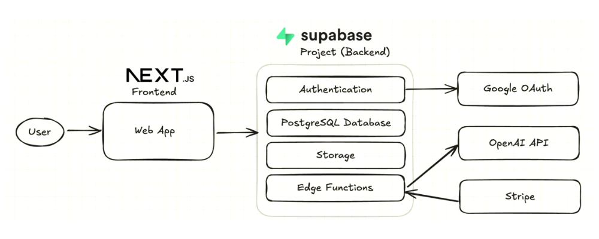
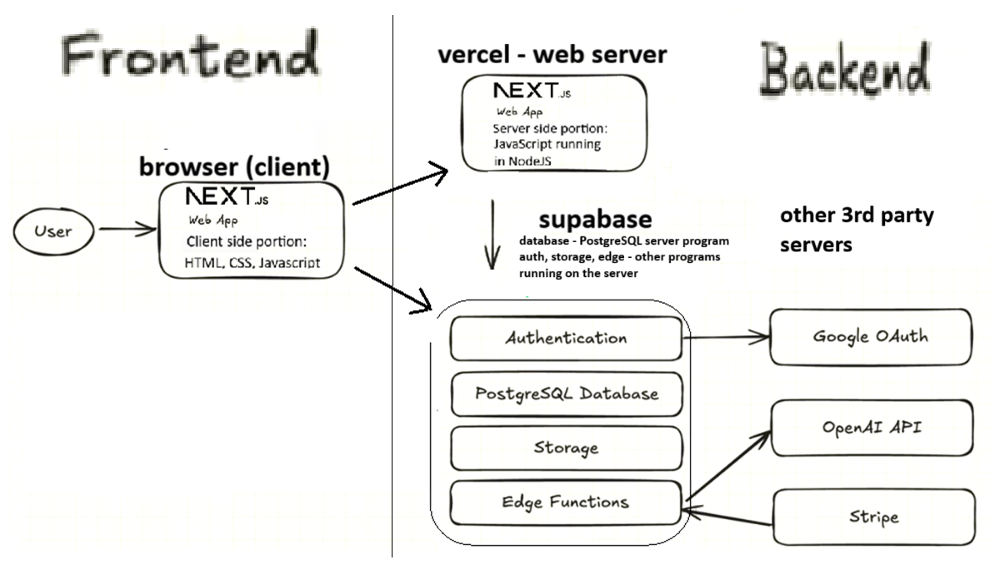

66 66. Project Architecture
66.1 Technical “Stack” (or just “tech stack”)
The following diagram highlights the various parts of the app and where they will be running. See below for an explanation of the diagram.
66.1.1 The following image is in the video:

66.1.2 I updated the image to make it a little more clear and accurate

66.2 Project Architecture
66.2.1 Frontend: Code that runs in the Browser
- Next.js
- Client library for Supabase integration
66.2.2 Backend: Web Server
- Vercel
- Next.js server side components
66.2.3 Backend: Supabase
PostgreSQL database
Storage system for storing the image files (similar to Amazon S3 storage)
Edge functions:
The edge functions are written in TypeScript and run on Supabase’s servers. Supabase uses the Deno Javascript runtime environment instead of the Node.js Theoretically, Supabase could have used Node.js for this but Deno is often chosen as a runtime environment for Typescript. The reasons for that are beyond the scope of this tutorial.Built-in authentication system
66.2.4 Backend: Third-Party Services
- Google Cloud (for OAuth)
- OpenAI API (for asking AI to pick an appropriate “tag” for each task)
- Stripe (for payment processing)
66.3 Keeping notes - Setup checklist
Over the course of this tutorial we will have to address all of the following in order to setup this project to work. The following sections will go into more detail about each of these topics:
Many of these steps require keeping track of numerous URLs, “keys” and other “configuration information” for your project. Often the “configuration information” is generated on one website (e.g. vercel, supabase, google cloud console, stripe) and must be copied to a different website or recorded in a specific file on your computer.
Keeping track of all this information can get VERY confusing. If you’re doing this kind of thing for the first time, it could help a lot to have one place (e.g. a Word document) that you use to keep notes and record all the configuration information you will need. This makes it much easier to review your setup and debug it when there are problems. In addition to the keys, urls, etc, it can be helpful to paste screenshots into this Word document to help you remember where you retrieved the info from and where you copied it to.
Keep in mind that much of this configuration information should be treated as “secret info” similar to your passwords. Therefore, treat this Word document as you would treat your passwords.
66.4 Further Learning - tutorials folder
To learn more about the technologies listed above you can look at your project’s tutorials/ folder. This info was prepared by the original developer of this tutorial project and includes:
- Detailed auth guides.
- Database and RLS walkthroughs.
- Edge Function examples.
- Storage and Stripe integration deep dives.
66.5 Further Learning - official documentation
You can also refer to official docs:
- Supabase: https://supabase.com/docs
- Next.js: https://nextjs.org/docs
- Stripe: https://stripe.com/docs
- OpenAI: https://platform.openai.com/docs
Practice Questions
Easy
Question 1 · Multiple choice
In this project, which code runs in the user’s browser?
- The PostgreSQL database
- The client-side part of the Next.js web app (HTML, CSS and JavaScript), including the Supabase client library
- The Supabase edge functions
- Stripe’s payment processing
Question 2 · Matching
Match each part of the architecture with its job.
| Part | Job | |
|---|---|---|
| 1. Vercel | A. stores the app’s data | |
| 2. Supabase PostgreSQL database | B. stores the uploaded image files (similar to Amazon S3) | |
| 3. Supabase storage | C. the web server that runs the server side of the Next.js app | |
| 4. Supabase edge functions | D. lets users log in with their Google account | |
| 5. Google Cloud (OAuth) | E. processes payments | |
| 6. OpenAI API | F. TypeScript functions that run on Supabase’s servers | |
| 7. Stripe | G. uses AI to pick a “tag” for each task |
Question 3 · True or false
In this project, Vercel stores the image files that users attach to their tasks.
Question 4 · Fill in the blank
Supabase edge functions are written in ______ and run on ______’s servers, using the ______ runtime environment instead of Node.js.
Question 5 · Short answer
What is a “tech stack”? Name the main technologies in this project’s tech stack.
Medium
Question 6 · Ordering
Put the setup checklist in the order the page gives:
- Deploy edge functions
- Set up Stripe
- Clone the project from GitHub
- Test the application
- Create Supabase project
- Configure OpenAI API
- Set up Google OAuth
Question 7 · Short answer
Look at the architecture diagram. Which part of Supabase connects to Google OAuth, and which part connects to the OpenAI API and Stripe?
Question 8 · Short answer
Why does the page recommend keeping one notes document (for example, a Word document) while you set up this project, and what should you put in it?
Question 9 · Multiple choice
Your setup notes document contains API keys and other configuration values. How should you treat it?
- Commit it to your GitHub repository so you never lose it
- Like your passwords: keep it private and don’t share it
- Paste it into the project’s README so teammates can find it
- Share it freely - configuration values are never secret
Question 10 · True or false
Supabase had no choice but to use Deno for its edge functions, because Node.js could not have been used for this.
Hard
Question 11 · Scenario
For each problem below, which part(s) of the architecture would you investigate first?
- “Log in with Google” fails.
- Tasks save correctly, but attaching an image to a task fails.
- New tasks are saved but never get an AI tag.
- The page for upgrading to a paid subscription doesn’t work.
Question 12 · Long answer
Explain the difference between the frontend and the backend in this project. Why is the backend spread across several companies’ servers (Vercel, Supabase, Google, OpenAI, Stripe) instead of running on one computer?
Question 13 · Short answer
The diagram shows Next.js in two places: in the browser and on Vercel’s web server. Why?